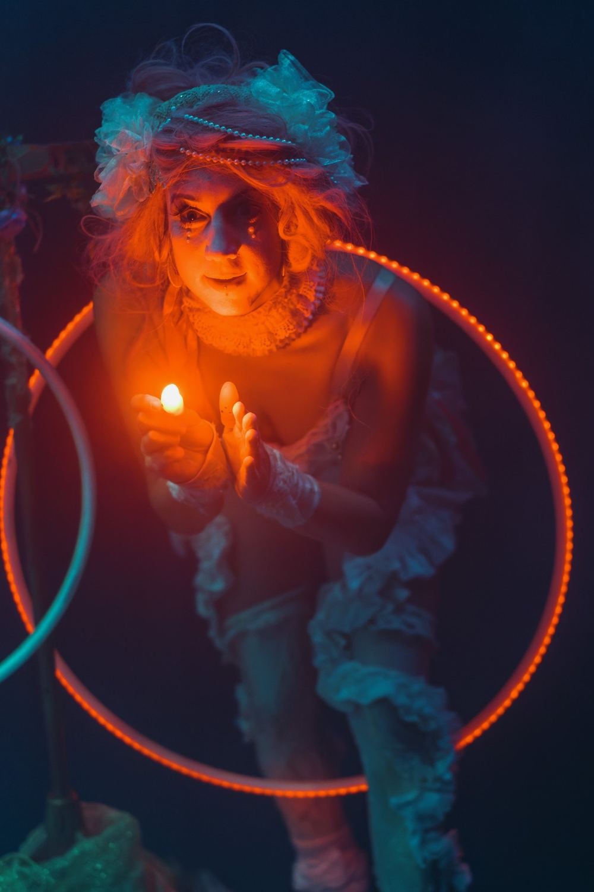
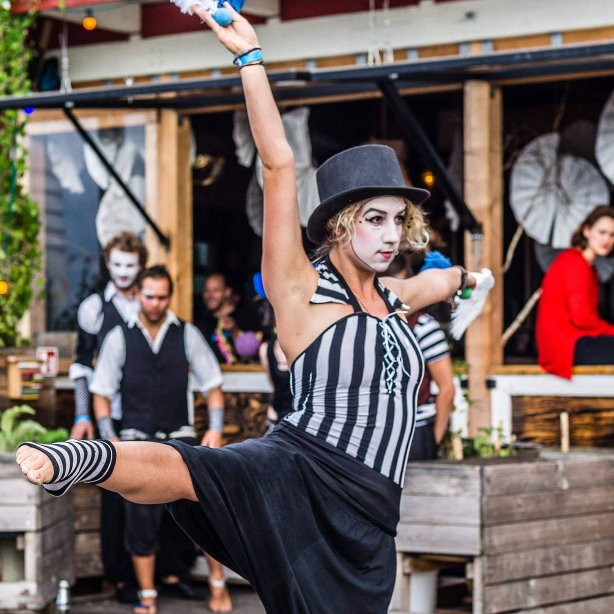
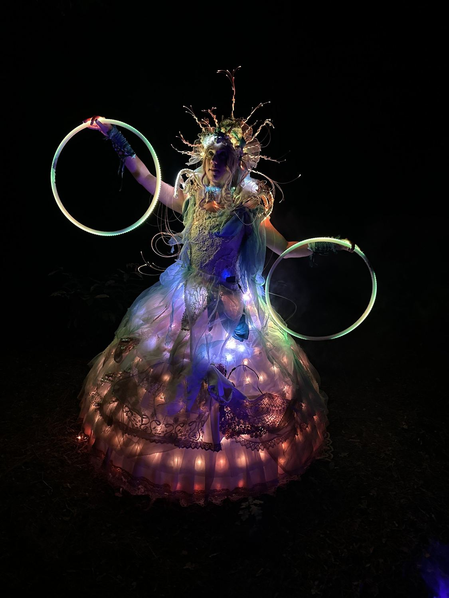

BERLIN
Ley Lotta

Seit über zehn Jahren Staunen auf Berlins Bühnen
Ley steht seit Kindheitstagen auf der Bühne — als Solo-Musikerin und Performerin, mit dem Zirkuskollektiv Entourage Berlin, als Akkordeonistin am GRIPS Theater und in Bands von The Electronic Swing Orchestra bis Frollein Smilla. Ley ist ausgebildete Musiktherapeutin, Kostümdesignerin und professionelle Multi-Hoop-Artistin mit einer besonderen Liebe für Lichtmagie.
Zur ganzen BiografieLucina's Light
Folgen Sie Lucina, der Lichtmacherin, durch ein fantastisches Universum, geführt von einem einzigen kleinen roten Leuchten. Präzise Hoop-Choreografie und schwebende Leuchtstäbe verbinden Neuen Zirkus mit modernster LED-Kunst — eine Reise voller Staunen für Hochzeiten, Festivals und große Galas. Erweiterte Fassungen mit Videomapping auch für große Fassaden.



Galerie








Holen Sie die Show auf Ihre Bühne
Hochzeiten, Festivals, Fantasy-Bälle, Firmengalas und private Feiern — melden Sie sich einfach mit Ihrer Idee, und Ley hilft Ihnen, den passenden Act für Ihre Veranstaltung zu finden!